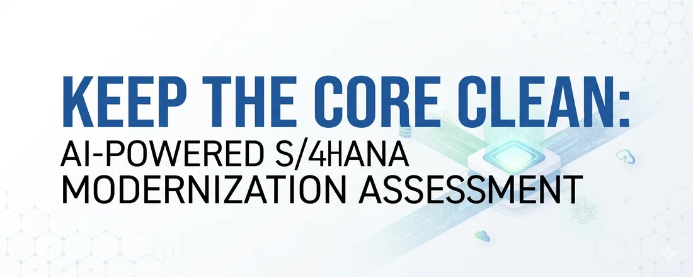
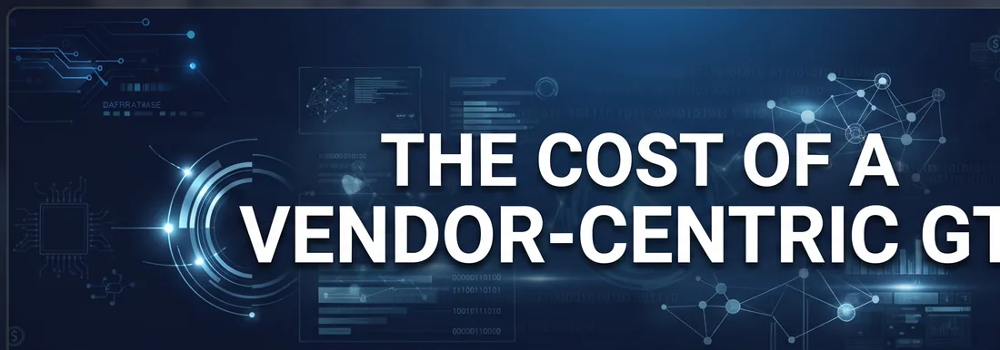
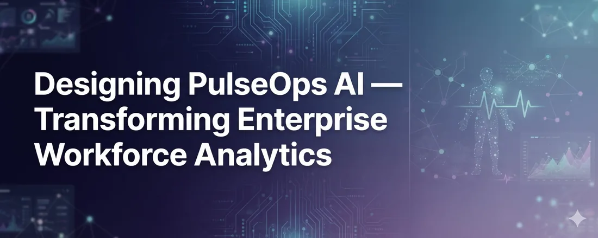
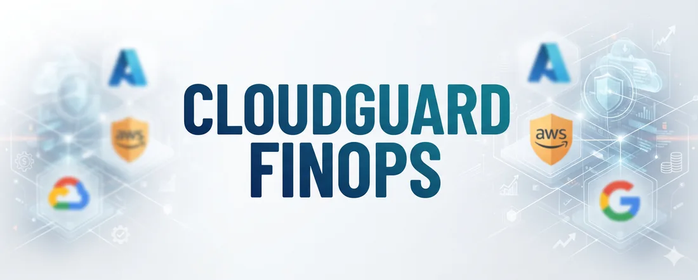
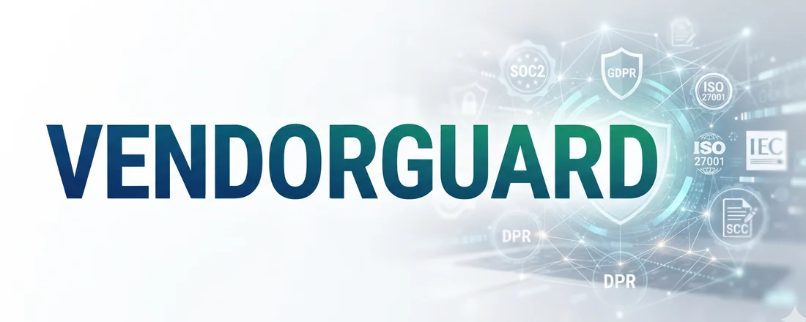
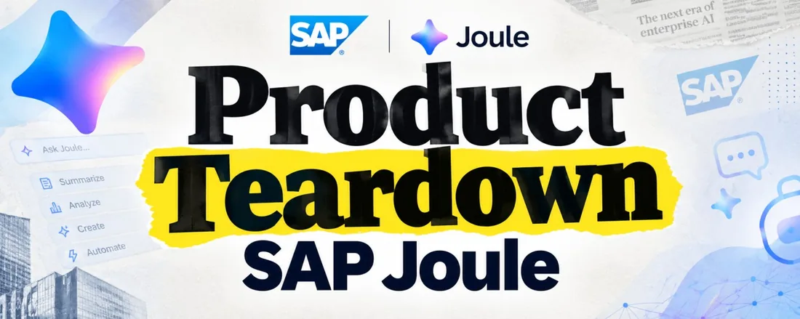
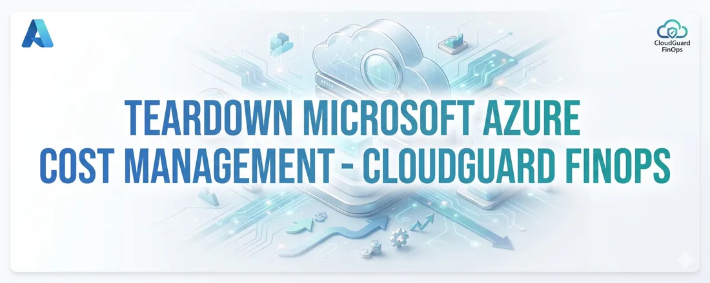
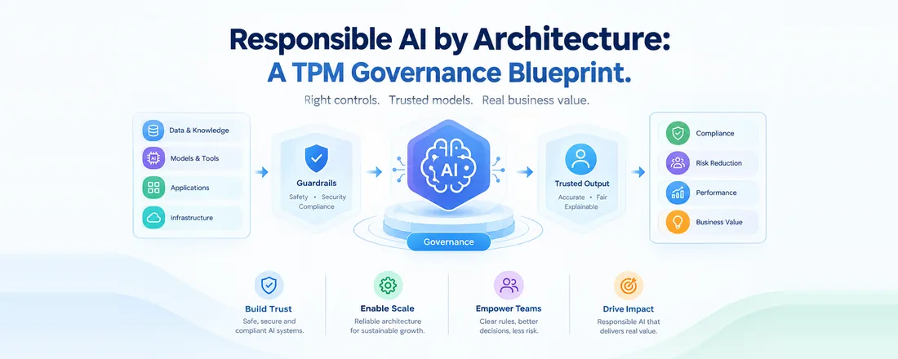
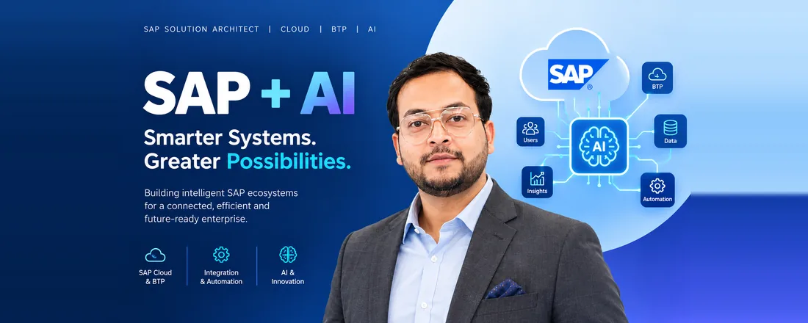

Anil Kumar
Meher.
Enterprise Platform Product Owner, based in Pune.
Ten years turning enterprise platform complexity into products customers adopt and finance teams can defend.
My story“Good companies manage engineering. Great companies manage product.”Inspired by Thomas Schranz
Enterprise B2B challenges.
Large platforms fail in predictable ways: custom code nobody dares touch, migrations that overrun, access nobody governs, and cloud spend nobody can explain. I work on those problems with Finance, Supply Chain and engineering in the same room.
I turn platform complexity into products customers adopt and finance teams can defend.
Start with the job to be done
Discovery workshops for Alfanar, Parle and Meijer turned legacy bottlenecks into backlogs.
Prioritize with evidence
RICE-ranked sprints for 12+ people across 3 geographies cut time-to-market by 20%.
Count what a platform costs and earns
Automated governance and a decoupled architecture delivered 30% lower OpEx.
Build trust into the architecture
Zero-trust access, SOC 2 aligned logging and CMMI Level 3 practices.
I’m a product owner for enterprise B2B platforms. I own roadmaps from discovery to rollout and turn messy business needs into prioritized backlogs for squads of 12+ across three geographies.
I got here the hard way. Ten years in SAP and cloud operations taught me where enterprise platforms break, and I’m now completing an executive program in Product Management and Applied AI at iHUB DivyaSampark, IIT Roorkee.
- Now
- Enterprise Platform Product Owner, Crave InfoTech
- Looking for
- Senior Product Owner or Platform PM roles in enterprise platforms, cloud and AI
- Products
- CoreAssess.AI, AccessHub.AI
- Based in
- Pune, India
Case studies.
The reasoning behind decisions: the problem, the options I rejected and the trade-offs I accepted.

Turning “Keep the Core Clean” into an Executable Plan
The product logic behind an AI-powered S/4HANA modernization assessment.
Read the case study
The Cost of a Vendor-Centric GTM
Where SAP’s early S/4HANA cloud push created friction, and what customers needed instead.
Read the case study
Designing PulseOps AI
Transforming enterprise workforce analytics: the problem, the users and the decisions.
Read the case studyWorking prototypes.
Small products that test ideas in cost, compliance and spend control. Both run on sample data.

CloudGuard FinOps
About this prototypeFinds idle and zombie resources across AWS, GCP and Azure and prices the waste in dollars. Finance sees spend against a savings target; DevOps sees what to switch off.
Open prototype
VendorGuard
About this prototypeTracks each vendor’s SOC 2, ISO 27001 and GDPR evidence in one register. Surfaces expiring certificates and open gaps before an audit finds them.
Open prototypeTeardowns.
Incentives, metrics and trade-offs behind products I use.

SAP Joule
Where the assistant earns daily use, how SAP benefits, and what I would measure.
Read the teardown
Azure Cost Management
FinOps UX and the tension between helping customers save and cloud revenue.
Read the teardownWriting.
Articles on enterprise AI and platform architecture.

Responsible AI by Architecture
A TPM governance blueprint for turning AI policy into working controls.
Read on LinkedIn
Enterprise AI doesn’t fail at the model
It fails at the foundation: why platform readiness decides AI outcomes.
Read on LinkedInWhat colleagues say.
Shared from LinkedIn, from people I’ve worked with.
“He brings a strong combination of technical depth, product thinking, and an understanding of scalable enterprise solutions.”
“He has the ability to look beyond the technology itself and understand the business impact, making him a valuable partner for both technical teams and business stakeholders.”
“Anil is the kind of leader you always want in your corner when the pressure is on.”
Ten years, one direction.
Each step is a role, and each step sits higher than the last. Select one to see where I worked, what I owned and the impact.
Jul 2016 – Dec 2019 · Surat, India
Technical Support & Operations Analyst
Yes Fashions Pvt Ltd
What I owned
- Owned the CRM platform, enabling customer engagement and data-driven trade decisions.
- Moved from merchandising into technical IT support as the organization’s primary SAP consultant.
- Led the data processing team monitoring hardware sizing and CPU performance so infrastructure kept pace with growth.
Impact
Jan – Jul 2020 · Gurugram, India
Operations & Supply Chain Associate
Vishal Mega Mart Limited
What I owned
- Partnered with Finance, Sales and Logistics to streamline order-to-procurement workflows.
- Tracked on-time delivery metrics across the retail supply chain.
- Led landscape design and setup of the initial S/4HANA 1909 proof-of-concept environments.
Impact
Aug 2020 – Aug 2021 · Bengaluru, India
Platform Technical Product Manager, Telemetry & SRE
Lance Soft Engineering
What I owned
- Established telemetry pipelines and Service Level Objectives for mission-critical enterprise environments.
- Directed the release of centralized admin portals (SAP Fiori, HANA Cockpit).
- Implemented automated health checks and proactive alerting.
- Governed authentication integrations (LDAP, SAML, IAM) to enforce zero-trust standards across multi-tenant infrastructure.
Impact
Sep 2021 – Mar 2023 · Pune, India
Technical Product Lead, Cloud Infrastructure & PaaS
Apprisia Consulting LLP
What I owned
- Designed secure PaaS frameworks on SAP BTP with low-latency hybrid connectivity between on-premises systems and AWS/Azure for clients in the US and Australia.
- Defined the Minimum Viable Architecture for enterprise cloud-transition assessments.
- Engineered automated deployment and infrastructure scripting pipelines.
- Ran structured user interviews and set architecture review and security compliance baselines that removed single points of failure.
Impact
Apr 2023 – Present · Pune, India (Remote, US/UK/EMEA accounts)
Enterprise Platform Product Owner
Crave InfoTech
What I owned
- Own the roadmap and delivery for the Elanco GTS RISE with SAP migration, a multi-region cutover that landed on schedule.
- Led the end-to-end release of the FCC SSAM2405 platform and accelerated post-deployment adoption.
- Turned Voice of Customer into PRDs and an MVP roadmap for GenAI and SAP Joule capabilities.
- Built a Python/VM automation framework and ran RICE-prioritized sprints for a 12+ person squad across 3 geographies.
- Led Jobs-to-be-Done discovery for Alfanar, Parle and Meijer, and the Eli Lilly cloud proof of concept.
Impact
Credentials and Certifications.
Formal learning behind the hands-on work.